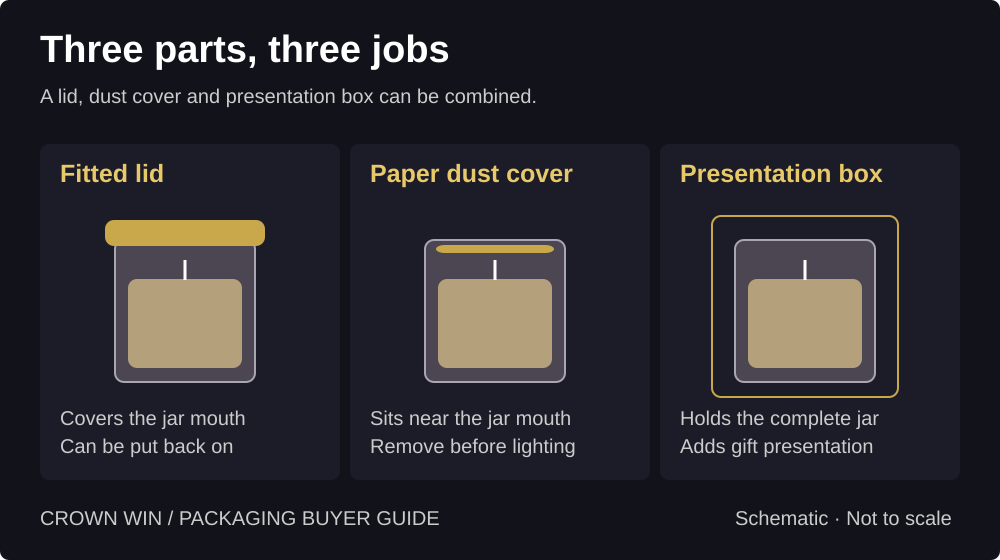
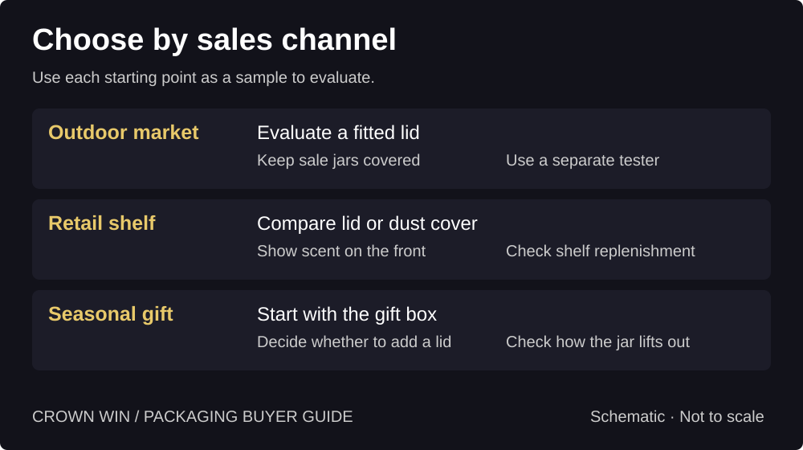
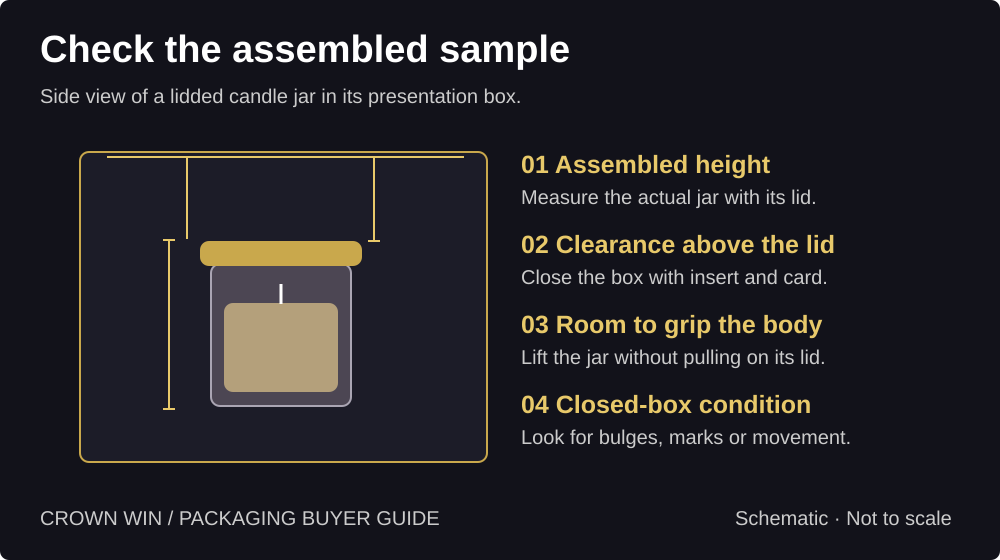

Candle Lids, Dust Covers or Gift Boxes:
What Does Your Candle Need?
Compare candle lids, paper dust covers and gift boxes for markets, retail and gifting. Check jar fit, lid clearance and removal before production.
Quick answer: Choose the component for the job. A fitted lid covers the jar opening; removable paper can serve as a dust cover; a gift box creates the presentation. Start with the sales channel, then check the finished pack with the actual jar.
What did candle makers and shoppers say?
An outdoor market seller in a candlemaking discussion described switching to lids after dealing with dust and paper covers that could blow away. Another commenter preferred no lid because they would discard it. In a separate discussion about candle boxes, some people valued a ready-to-gift presentation while others saw little use for the box. These accounts suggest questions to test with your own customers; they do not show how common any preference is.
What job does each component do?
A fitted lid covers the jar opening and can be put back on for storage when the candle is fully cooled and the maker’s instructions allow it. Check fit on actual jars: a lid that sits crooked, rattles or is hard to lift can detract from the experience. Do not assume a decorative lid is airtight or suitable for extinguishing a candle.
A removable paper dust cover sits at the jar opening and can carry a short brand message. Check how it stays in place and how easily it lifts out without catching the wick. Make removal before lighting clear. A paper cover does not give the jar a rigid closure.
A presentation box creates a gift-ready format and gives you room for the scent name, product information or an opening message. It can hold a jar with either cover, or an uncovered jar if the finished pack suits the channel. Its presence does not demonstrate transport protection.


Which combination fits your sales channel?
Outdoor markets: start by evaluating a fitted lid on stock that will sit open to the environment. Decide how shoppers will smell the candle: a separate tester may let you keep sale units covered. Observe how often staff open and replace lids.
Retail shelves: trial a fitted lid or removable dust cover with your intended display. If the carton conceals the jar, keep the scent name easy to find on the visible face and identify a tester if the retailer uses one. Check that staff can replenish without mixing scents.
Seasonal gifts: start with the box and opening sequence, then decide whether the lid or dust cover adds value. Compare the standard retail candle with the gift version using the same jar: what changes in packing time, parts, fit and how the recipient removes the candle?


What should you check before approving a sample?
Measure the assembled jar. Send the actual jar with its lid or dust cover. Record its widest outside diameter, full height with the lid in place, weight and any protruding knob or rim. Check variations across the range rather than designing from wax capacity alone.
Close the complete box. Include the insert and any card. Look for contact marks or a lid that lifts, a box flap that bows, or a loose jar. Check the tallest and shortest configurations. Agree the clearance on the filled sample; there is no universal value.
Ask someone to open it unaided. Can they identify the scent, grip the jar by its body and remove it without pulling on the lid? Can they spot the removable cover and understand the instructions? Record any rubbing on labels, snagging or assembly steps that staff cannot easily repeat.
Keep shipping checks separate. For parcel sales, evaluate the packed jar and transport carton together for the intended route. Use our outer carton guide for that separate decision.


What should go in your quote brief?
Share the jar drawing or sample, weight, assembled height, lid details, scent count, retail or gift format, quantity and destination. Ask for a breakdown of the box, insert, print and assembly. State which components you supply, and compare the same jar and quantity if requesting two packaging options. Explore Crown Win candle packaging for relevant box formats.
Research scope: The linked Reddit threads are individual experiences. The diagrams show design checks, not tested specifications or survey results.
Start with the assembled jar.
Share jar dimensions, lid details, quantity and sales channel to discuss a box and sample brief.
→ Request a Custom Quote